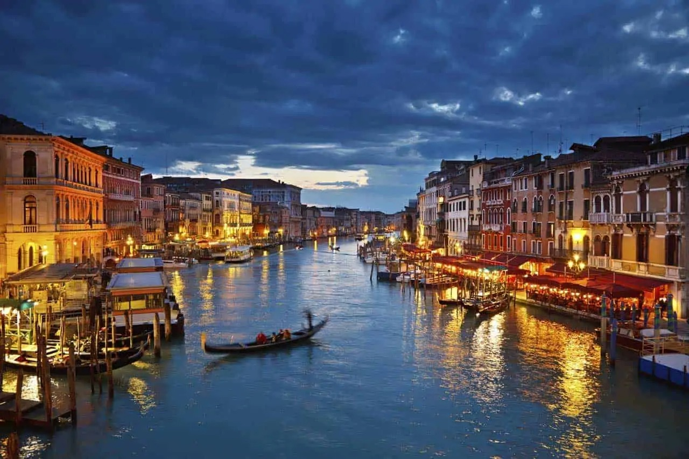
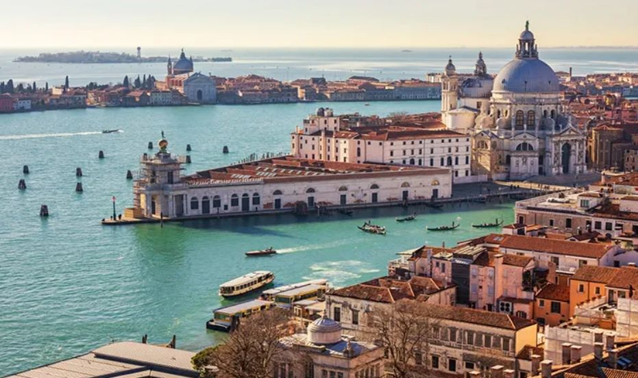
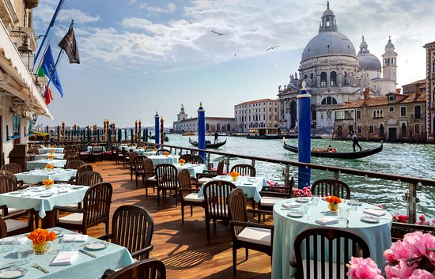

Veneza
Veneza, a cidade das águas, é um destino verdadeiramente encantador e romântico que captura a imaginação de todos que a visitam. Construída sobre uma lagoa no nordeste da Itália, Veneza é famosa por causa dos seus canais, pontes elegantes e arquitetura deslumbrante. Vamos explorar alguns dos pontos turísticos mais notáveis desta cidade única.
A Praça de São Marcos, conhecida como o coração de Veneza, é um ponto de partida perfeito para explorar a cidade. A Basílica de São Marcos, com a sua arquitetura e mosaicos deslumbrantes, é uma das igrejas mais famosas do mundo.
Os canais de Veneza são um destaque indiscutível. Fazer um passeio de gôndola é uma experiência romântica e uma maneira encantadora de explorar a cidade. Ao longo do Grande Canal, encontrará magníficos palácios venezianos, como o Palácio Ducal e a Ca' d'Oro, que testemunham a riqueza e a opulência de Veneza em tempos passados.
Veneza também é famosa pelos seus festivais e eventos culturais. O Carnaval de Veneza é conhecido em todo o mundo, com as suas máscaras elegantes e tradições históricas.

Barcos Gôndola

Marghera

The Gritti Terrace